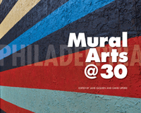

A history of the Mural Arts Program and what it can teach other cities about public art
A history of the Mural Arts Program and what it can teach other cities about public art


 A history of the Mural Arts Program and what it can teach other cities about public art
A history of the Mural Arts Program and what it can teach other cities about public art

|  |
Philadelphia Mural Arts @ 30edited by Jane Golden and David Updikepaper EAN: 978-1-43991-131-0 (ISBN: 1-4399-1131-2) |
"The Mural Arts Program has a culture of valuing change. . . . It is easy to rest on success and past accomplishments, but the fittest leaders and best organizations are those that have the nerve to value adapting to changing needs and circumstances. Seeing this commitment has reinforced my appreciation for what Mural Arts has accomplished in its first three decades, and for its continuing contributions to the field of publicly engaged art."
—From the Foreword by Rick Lowe
The Mural Arts Program of Philadelphia began in 1984 as a summer youth program with modest support from city government. Under the guidance of Jane Golden, however, it gradually grew into one of the largest and most successful public art organizations in the country, garnering support from local corporations, foundations, and individuals to extend the reach and effectiveness of its innovative programs.
Now three decades later, the Mural Arts Program has created more than 3,800 murals and public art projects that have made lasting imprints in every Philadelphia neighborhood. In the process, Mural Arts has engaged thousands of people of all ages from across the city, helped hundreds of ex-offenders train for new jobs, transformed the face of struggling commercial corridors, and developed funding partners in both public and private sectors.
While the Mural Arts Program has significantly changed the appearance of the city, it has also demonstrated how participatory public art can empower individuals and promote communal healing around difficult issues. This book is a celebration of and guide to the program's success.
Unlike Philadelphia Murals and the Stories They Tell and its sequel, More Philadelphia Murals and the Stories They Tell, Philadelphia Mural Arts @ 30 showcases the results of 21 projects completed since 2009 and features essays by policy makers, curators, scholars, and educators that offer valuable lessons for artists, activists, and communities to emulate.
Philadelphia Mural Arts @ 30 traces the program's history and evolution, acknowledging the challenges and rewards of growth and change while maintaining a core commitment to social, personal, and community transformation.
Contributors include: Dr. Arthur C. Evans, Jr., Arlene Goldbard, Thora Jacobson, Rick Lowe, Dr. Samantha L. Matlin, Paulette Moore, Jeremy Nowak, Maureen H. O'Connell, Elisabeth Perez Luna, Robin Rice, Dr. Jacob Kraemer Tebes, Elizabeth Thomas, Cynthia Weiss, Howard Zehr, and the editors.
Excerpt available at www.temple.edu/tempress
The review was of the event at the Free Library of Philadelphia on March 25. It read, "[Philadelphia] Mural Arts @ 30 combines beautiful color photos of murals across the city with essays concerning the artistic, cultural and social significance of mural making.... This new book offers stories that show that the impact of murals goes far beyond their aesthetic beauty since, as Golden said several times in her speech, 'Art can ignite change.'�
—City Paper website
"This book celebrates the 30-year milestone [of Philadelphia Mural Arts] and also shares the lessons learned�related to the program's social, organizational, political, and creative aspects�via visual and verbal means. Twenty-one recent projects are specifically highlighted by way of documentary photographic essays that, in turn, supplement the textual essays addressing the cooperative and transformative aspects of this program. A list of resources used by Mural Arts staff points readers to other publications and websites of use to those researching and working in mural arts and public art programs. This book will be useful in libraries catering to practitioners and researchers of public art and socially engaged practice. Summing Up: Recommended."
—Choice
Jane Golden has been the Executive Director of the Philadelphia Mural Arts Program for 30 years. Under Golden's direction, the Mural Arts Program has become the largest program of its kind in the United States. She is the co-author of Philadelphia Murals and the Stories They Tell and More Philadelphia Murals and the Stories They Tell.
David Updike is an editor in the Philadelphia Museum of Art�s publishing department. He has been a consultant to numerous nonprofits and university presses and is a regular contributor to Ornament magazine.
Education
Art and Photography
Philadelphia Region
© 2015 Temple University. All Rights Reserved. This page: http://www.temple.edu/tempress/titles/2323_reg.html.